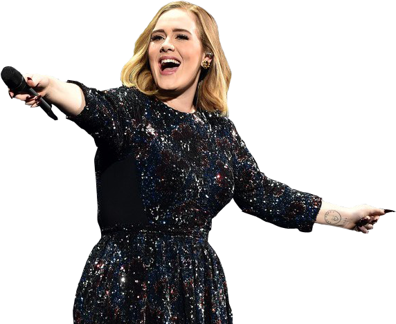
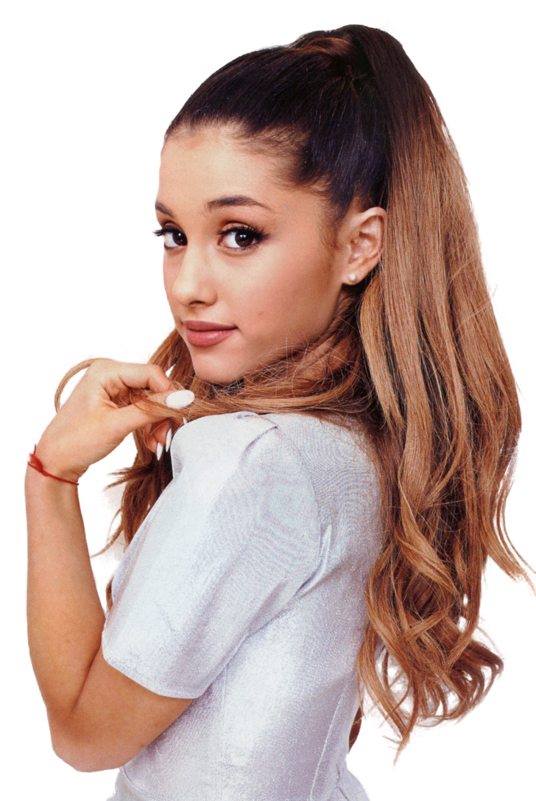
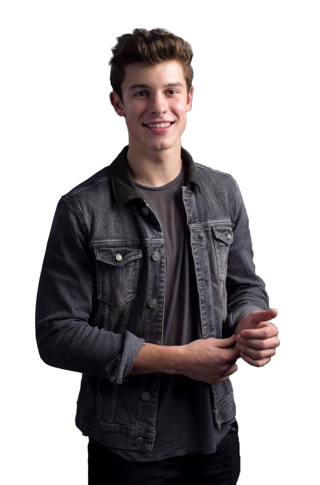

Artistas Internacionais
-

Adele
Adele Laurie Blue Adkins MBE é uma cantora, compositora e multi-instrumentista britânica. Ela é uma das artistas recordistas de vendas no mundo, com mais de 120 milhões de discos vendidos.
-

Ariana Grande
Ariana Grande-Butera, conhecida profissionalmente como Ariana Grande, é uma cantora, compositora, instrumentista, produtora musical, dançarina, atriz, dubladora e apresentadora norte-americana.
-
BTS
BTS, também conhecido como Bangtan Boys é um grupo masculino sul-coreano formado pela empresa Big Hit Music, uma subsidiária da HYBE Corporation, em 2013. Ele é composto por sete membros: RM, Jin, SUGA, J-Hope, Jimin, V e Jungkook.
-

Shawn Mendes
Shawn Peter Raul Mendes, mais conhecido como Shawn Mendes é um cantor, compositor e modelo canadense. Ele ganhou popularidade em 2013, postando versões cover de músicas no aplicativo de compartilhamento de vídeos Vine.
-

Taylor Swift
Taylor Alison Swift é uma cantora, compositora, produtora, diretora e roteirista estadunidense. Suas composições narrativas, muitas vezes inspirada pelas suas experiências pessoais, tem recebido ampla cobertura mediática e elogios críticos.